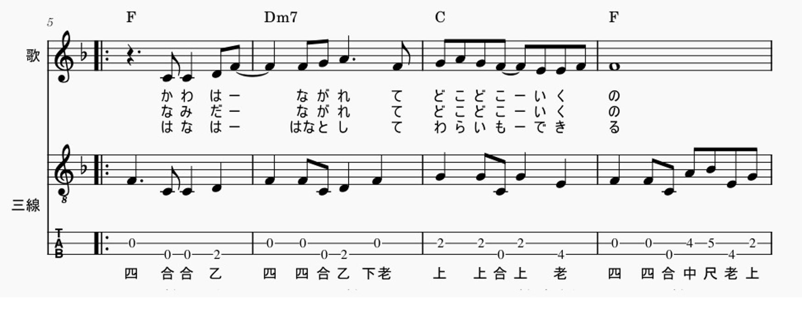
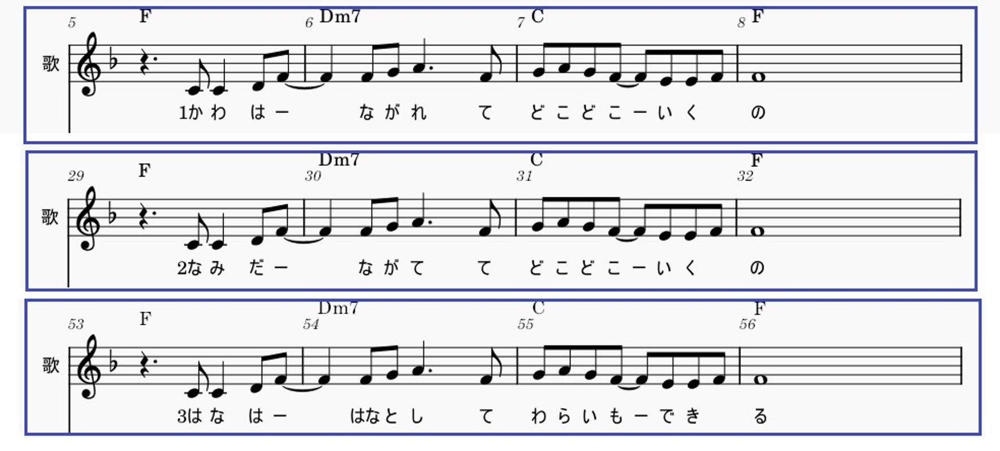
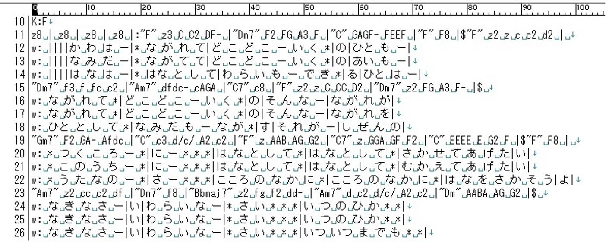
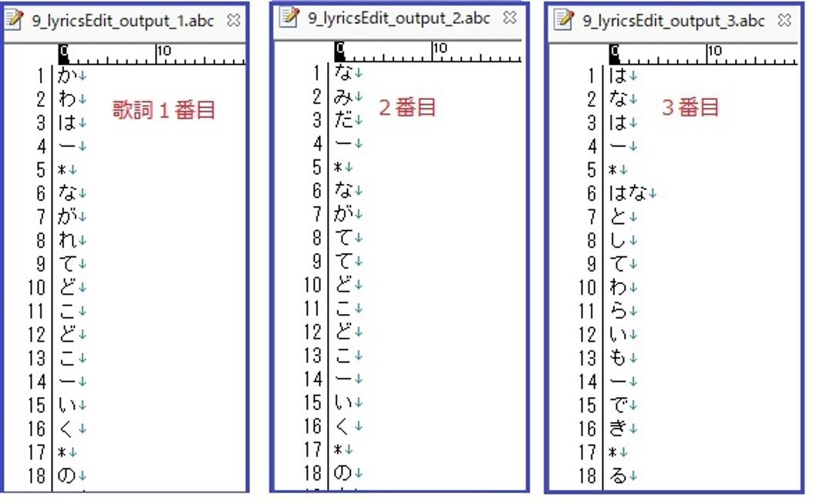

うるがいの話 ある日
最新: 歌詞の展開ツール【うるがいの話 ある日】とは 一日だけのプログです
『うるがいの話』の最新一日だけのプログで、通信料が少なく経済的だ。カニの画像をクリックすると全ての日付が載る『うるがいの話』サイトを表示します
|
|
【うるがいの話】 うるがい(ｳﾙｶﾞｲ urugai)とは、『もずくがに』の名前でとても大きくなります。 |
|---|---|
|
|
【カミマヤーの話】 猫のことを方言でマヤーといいます。カミマヤー（kamimayaa）とは、神の猫のことです。 |
|
【たながぁの音楽】 たながぁ（ﾀﾅｶﾞｰ tanagaa）とは手長えびのことで、何種類かあり大きいのは車 エビぐらいになります。 |

|
【ぶながぁの話】 ぶながぁ(ﾌﾞﾅｶﾞｰ bunagaa)とは、赤い髪の毛、赤い身体、そして身長は１ｍ２０ｃｍ ぐらい、川の蟹を食べているの目撃された。場所は沖縄県国頭郡大宜味村のと ある村僕の隣近所に住んでいる爺さんから、聞いた話です。 |
|
|
【ギーマの話】 ギーマ(giima)とは、山原の里山に咲くスズランに似た、 花を付けます。実は食べられます、 気が付くと口の周りが紫になっています。 |
2025年09月29日 (月）歌詞の展開ツール
15:18
『連続して上行の歌詞を削除する』の付箋紙を取りました。楽譜
に歌詞を登録する場合、１番２番３番と歌詞が反復しているとき
は、３段にして歌詞を登録する。

これを、ユーチューブ動画にする場合は、繰り返しを展開した形
にする。これって、結構大変なのです。動画の中には、反復のま
ま録画されているのもあるけど、せっかくなので・・。で長い間
なんとか楽になる方法はないかと、調べていたのです。そしてと
うとうツールが出来ました。ユーチューブ動画の楽譜データをテ
キストデータに展開する。

そして、これをプログラム２本を作成し、歌詞が埋め込まれてい
るテキストを、歌詞ごとに作成する。

そして、これら歌詞ごとテキストをコピーして、反復を展開した
楽譜データの貼り付けたい歌詞の音符を選択し、「Ｃｔｒｌ」キ
ーと「Ｌ」をクリックし、「Ｃｔｒｌ」キーと「Ｖ」キーを同時
に押すと、コピーした歌詞が貼り付けられます。そして、次の音
符の歌詞を設定する場所へ移動するので、「Ｃｔｒｌ」キーと「
Ｖ」キーを同時に押す作業を必要な数だけ繰り返す。全然、楽ち
ん、間違いもない！。工工四の勘所は、既に実施済。

今日は 『あの素晴しい愛をもう一度 三線』 のユーチューブ動画
の工工四を作成して楽譜とチェックしていたら、楽譜の勘所が３
か所誤っていたので、訂正して再度アップしました。全て手作業
で、勘所を打ち込んでいたので全音符に設定してなく、手抜きし
ていましたネ。
お、歌詞を分離したユーチューブ動画は、 『全ての人に花を
（三線演奏）』 でほぼ４年前の２０２１年１２月２０日にアップ
したもので、楽譜ソフトも古いタイプだったため再作成して 小
乗チャンネルの方 にアップしました。そして、古いものは限定公
開に変更した一般の利用者からは、見れないようにしました。後
は、楽譜そのものの楽譜の打ち込みの効率化です。おそらく、Ａ
Ｉの利用かな。マ、いつかは。しかし、『あの素晴しい愛をもう
一度 三線』は三線のみのアカペラでした、いいですね。